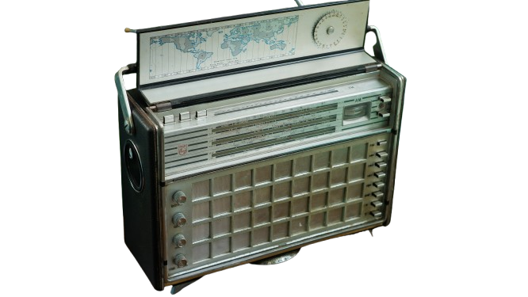
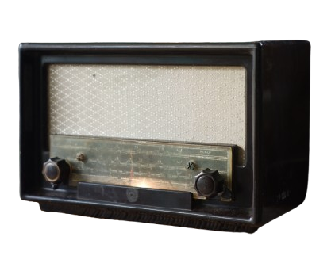
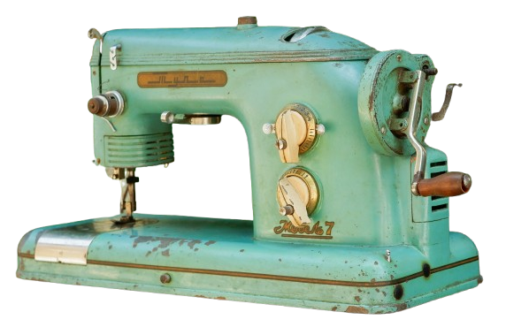
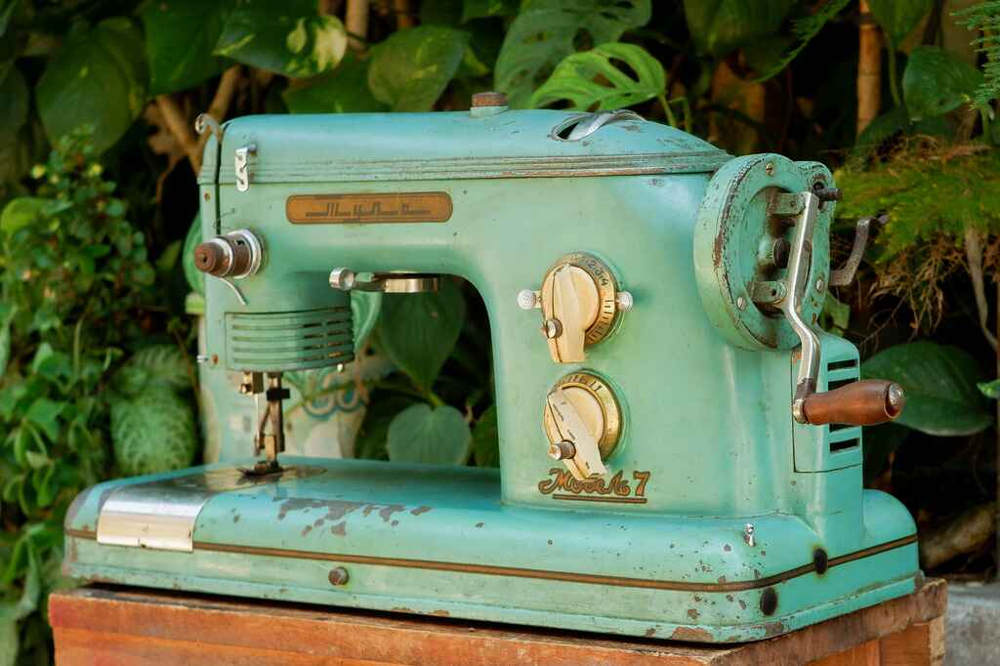
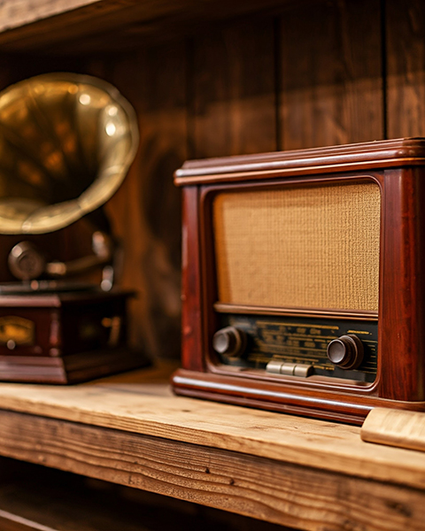

Jelajahi koleksi barang antik berdasarkan kategori

Radio transistor

Radio Tabung
Turntable antik

Lawasan
Turntable philips
turntable ini menawarkan pengalaman mendengarkan yang otentik, dengan kemampuan untuk memainkan berbagai jenis vinyl.

Mesin jahit antik
Mesin jahit antik berwarna hijau ini menyimpan banyak cerita di balik setiap jahitannya.

Bakulnostalgia
Bakulnostalgia adalah surga bagi para pecinta barang antik dan radio antik. Kami menawarkan koleksi unik dan bersejarah yang akan membawa Anda bernostalgia ke masa lalu.
Lokasi: Salatiga, Jawa Tengah